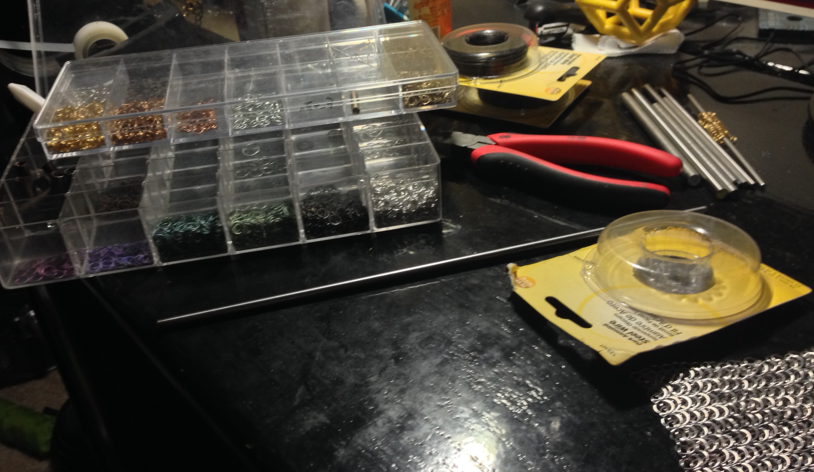

Some time around May 2013 I had the urge to do something with my hands. After returning from a couple mile walk I resolved to revive an idea I had back in high school: make images in chainmail using differently colored metal. To this day I haven't looked back. My aim is to thoroughly explore this medium, and it will probably be years (if ever) before I run out of ideas.
Feel free to check out the pieces in "chronological" order, or just skip to the latest and often best piece.
On the offhand chance that you are reading this and want to commission a piece, I currently stand firmly in the amateur camp but am willing to change. Contact me at adrian.marple@gmail.com and we can discuss feasibility.
